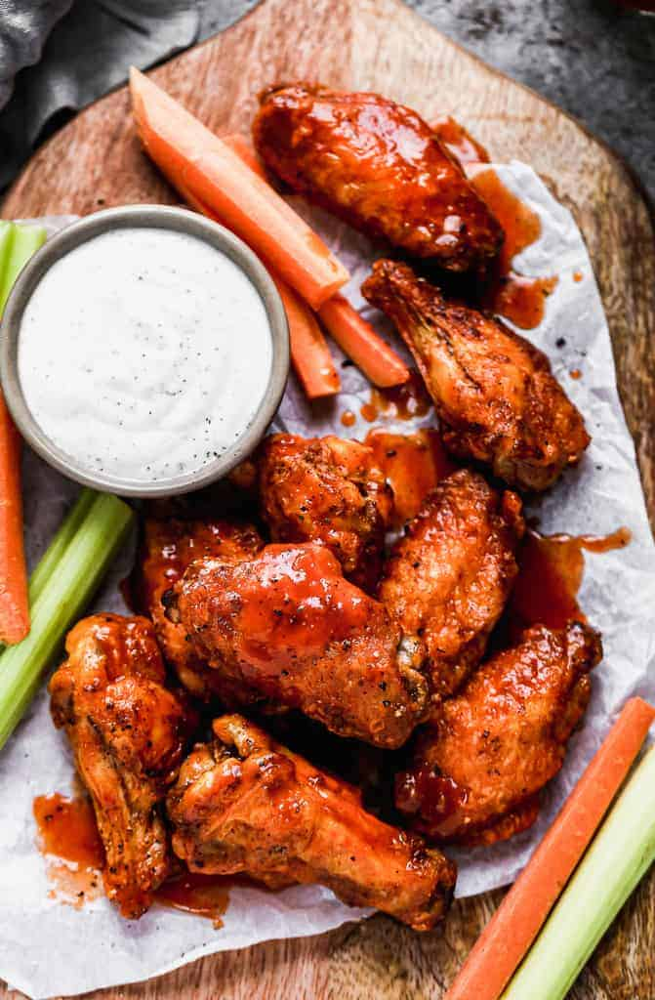

Hot Wings

Description
This is an easy chicken wing recipe that can be prepared in an air fryer.
A wing sauce recipe is also included but you can use your own if you feel.
Ingredients
Wing Seasoning:
- 1 Lbs. of chicken wings
- 1 Tbsp baking powder
- 2 Tbsp paprika
- 1 Tsp garlic powder
- 1 Tsp salt
- 1 Tsp black pepper
Wing Sauce:
- Miranda's creamy style ghost pepper wing sauce
- Any hot sauce to up the spice
- 2 Tbsp of gochujong
- Sweet chili soy sauce
- 2 Tbsp butter
Steps
Wings:
- Preheat air fryer to 400°F.
- Add Wings, and seasonings, into a large bowl.
- Place a plate or lid onto the bowl and shake violently.
- Spray the airfryer basket, lightly, with pam, then add wings.
- Cook for 10 minutes, shift them after 5 minutes.
- Take out wings and toss in sauce then serve.
Wing Sauce:
- Heat a sauce pan at low heat.
- Add half a stick of butter to the sauce pan and let it get soft.
- Add rest of the wing sauce ingredients and let it melt and mix.
- Leave the sauce on simmer until wings are cooked.